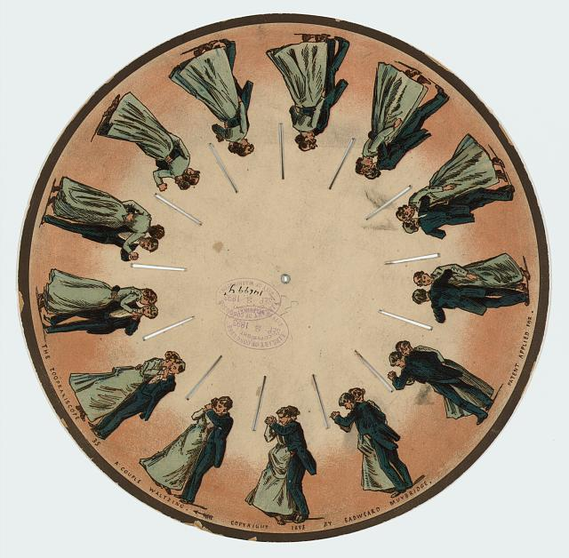
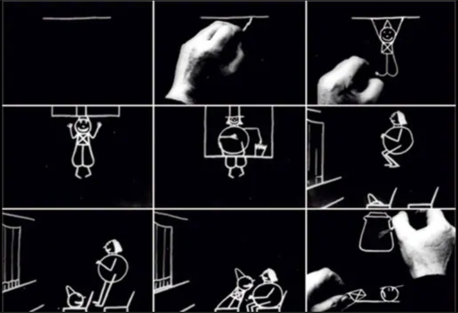
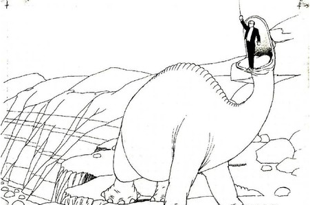
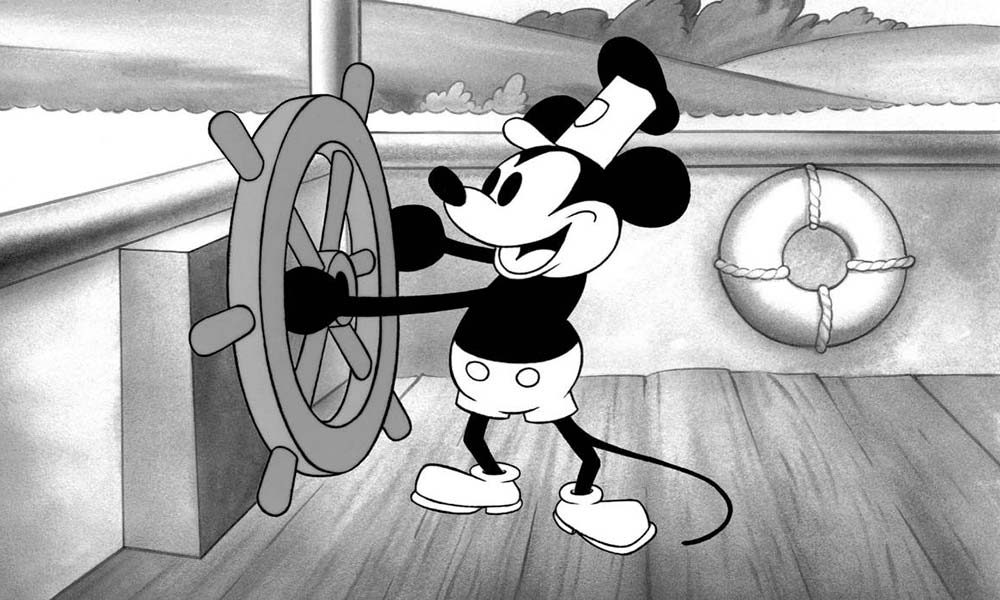
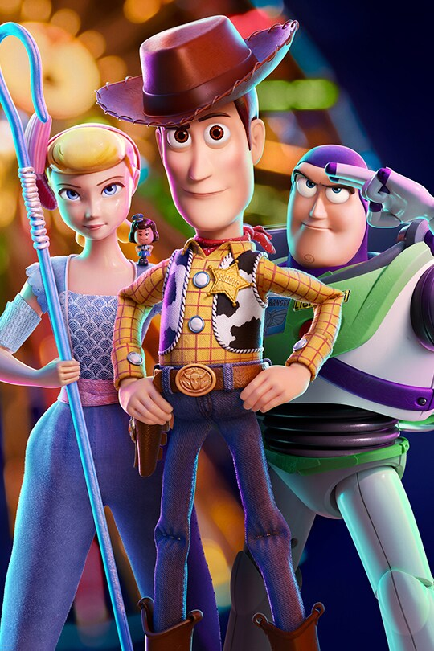
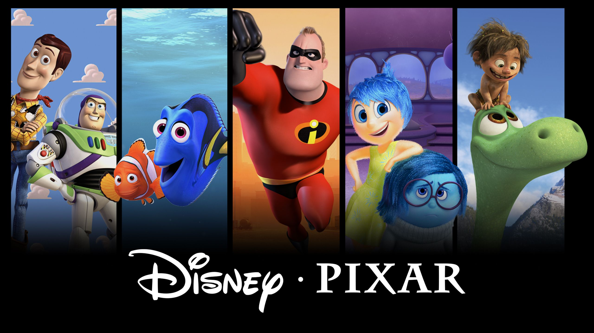
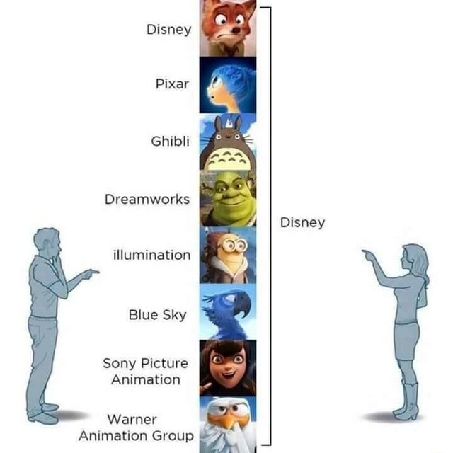

Exploring the Origins of Animation
Animation, the art of bringing static images to life through motion, is a fascinating medium that has captured the imagination of audiences worldwide for over a century. But where did it all begin? Who were the pioneers behind this groundbreaking art form? Join me on a journey through the history of animation as we uncover its origins and evolution.
A Journey through History
February 20, 2024
The Early Beginnings
The roots of animation can be traced back to ancient times, where primitive forms of animation were used to depict movement and convey stories. One of the earliest examples of animation can be found in prehistoric cave paintings, where sequential images were painted to create the illusion of motion.
Fast forward to the 19th century, and we see the emergence of devices such as the zoetrope and the phenakistoscope, which used spinning disks with sequential images to create the illusion of motion when viewed through slits. These inventions laid the foundation for modern animation techniques.

The Birth of Animation
The true birth of animation as we know it today can be credited to several pioneering individuals who made significant contributions to the art form. One such figure is Émile Cohl, a French artist who created the first animated film, "Fantasmagorie," in 1908. This groundbreaking film featured simple, hand-drawn animations that showcased the possibilities of the medium.

Another key figure in the history of animation is Winsor McCay, an American cartoonist known for his iconic comic strips and animated films. McCay's animated short film "Gertie the Dinosaur" (1914) is considered one of the earliest examples of character animation and demonstrated the potential of animation as a storytelling medium.

References:
The Golden Age of Animation
February 27, 2024
The 1920s and 1930s saw the rise of animation studios such as Walt Disney Studios, Warner Bros. Animation, and Fleischer Studios, which produced iconic animated shorts and feature films that captivated audiences worldwide. Disney's "Steamboat Willie" (1928), featuring the debut of Mickey Mouse, marked the beginning of Disney's dominance in the animation industry.During this golden age of animation, innovations such as synchronized sound and Technicolor revolutionized the medium, allowing animators to create more immersive and visually stunning films. Classic animated films such as Disney's "Snow White and the Seven Dwarfs" (1937) and Warner Bros.' "Looney Tunes" shorts became cultural landmarks and inspired generations of animators and filmmakers.

Modern Animation and Beyond
In the decades that followed, animation continued to evolve and diversify, with the advent of new technologies such as computer animation paving the way for groundbreaking films such as Pixar's "Toy Story" (1995), the world's first fully computer-animated feature film.

Today, animation is a thriving industry that encompasses a wide range of styles, techniques, and genres, from traditional hand-drawn animation to cutting-edge 3D animation and beyond. With the rise of streaming platforms and digital distribution channels, animation has become more accessible than ever, allowing creators from around the world to share their stories with global audiences.
Reference:
The World of Animation Studios
Animation studios are the heart and soul of the animation industry, where creativity meets technology to bring enchanting worlds to life. Understanding the history and evolution of animation studios provides insight into the remarkable journey of storytelling through animation.
A Journey through Creativity
March 05, 2024
One of the pioneering animation studios, Walt Disney Animation Studios, was founded by Walt Disney and Roy O. Disney in 1923. Their vision revolutionized the animation industry with iconic characters like Mickey Mouse and groundbreaking films such as "Snow White and the Seven Dwarfs."
Another prominent studio, Pixar Animation Studios, was established in 1986 by Edwin Catmull, Steve Jobs, and John Lasseter. Pixar's groundbreaking computer-animated feature film "Toy Story" marked a new era in animation, blending cutting-edge technology with captivating storytelling.

Leading Competitors
Apart from Disney and Pixar, other leading animation studios include DreamWorks Animation, founded in 1994 by Jeffrey Katzenberg, Steven Spielberg, and David Geffen. DreamWorks has produced beloved franchises such as "Shrek," "Kung Fu Panda," and "How to Train Your Dragon."
Additionally, Studio Ghibli, founded by Hayao Miyazaki and Isao Takahata in 1985, has earned global acclaim for its hand-drawn animated films, including "Spirited Away," "My Neighbor Totoro," and "Princess Mononoke."

Reasons for Establishment
Animation studios were created to fulfill various creative and commercial aspirations. Walt Disney envisioned a studio that would produce innovative animated films for audiences of all ages. Pixar aimed to push the boundaries of computer animation and storytelling.
DreamWorks Animation sought to challenge Disney's dominance in the animation industry and cater to a diverse audience with its unique storytelling style. Studio Ghibli was established to preserve the art of hand-drawn animation and create timeless masterpieces.
Conclusion
Animation studios have shaped the landscape of entertainment, inspiring generations with their creativity and innovation. Their contributions continue to influence and redefine the art of animation, captivating audiences worldwide.
For further reading:
The Dynamic Worlds of Traditional and Modern Animation
In the realm of animation, two prominent techniques have dominated the landscape: 2D animation and 3D animation. Both approaches offer unique storytelling possibilities and have carved their own niches in various forms of media. Let's delve into the characteristics, advantages, and differences between these two captivating forms of animation.
2D Animation vs 3D Animation
March 14, 2024
Traditional Charm of 2D Animation:
2D animation, also known as traditional animation, has a rich history dating back to the early days of animation. It involves creating characters and environments using two-dimensional drawings or illustrations. Classic examples of 2D animation include Disney's iconic hand-drawn films like "Snow White and the Seven Dwarfs" and "The Lion King."
Advantages of 2D Animation:
- Artistic expression: 2D animation allows for a wide range of artistic styles and techniques, offering a unique visual appeal.
- Cost-effective: Compared to 3D animation, 2D animation production can be more budget-friendly, making it accessible for independent filmmakers and smaller studios.
- Time-tested: With decades of history, 2D animation techniques have been refined and perfected, resulting in timeless classics beloved by audiences worldwide.

Immersive Realism of 3D Animation:
3D animation, on the other hand, utilizes computer-generated imagery (CGI) to create three-dimensional characters, environments, and visual effects. This modern approach to animation has revolutionized the industry, enabling filmmakers to achieve unprecedented levels of realism and immersion.
Advantages of 3D Animation:
- Realistic visuals: 3D animation can create lifelike characters and environments with intricate details, enhancing immersion and storytelling.
- Versatility: From animated feature films to video games and architectural visualization, 3D animation finds applications in various industries, offering versatility and adaptability.
- Technological advancements: Constant innovations in CGI technology push the boundaries of what's possible in animation, leading to groundbreaking visual experiences.

Comparing 2D and 3D Animation:
While both 2D and 3D animation have their strengths, they cater to different artistic visions and storytelling needs. 2D animation thrives on its artistic charm and timeless appeal, while 3D animation excels in creating immersive, visually stunning worlds.
In conclusion, the debate between 2D animation and 3D animation isn't about one being superior to the other but rather recognizing the unique strengths and creative possibilities each technique offers. Whether it's the nostalgic charm of hand-drawn animation or the cutting-edge realism of CGI, both forms continue to captivate audiences and push the boundaries of imagination.
References: